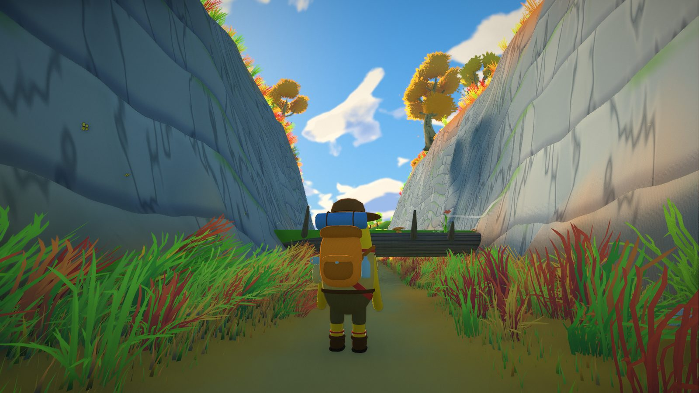
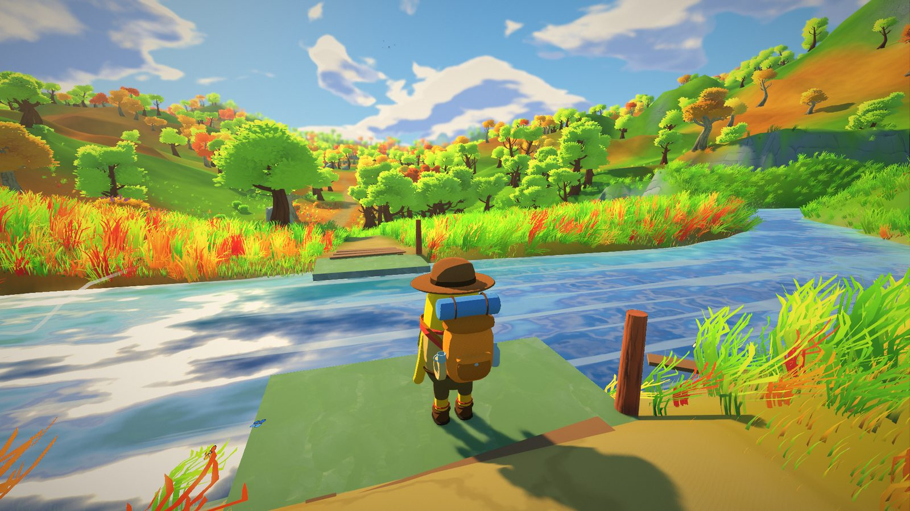
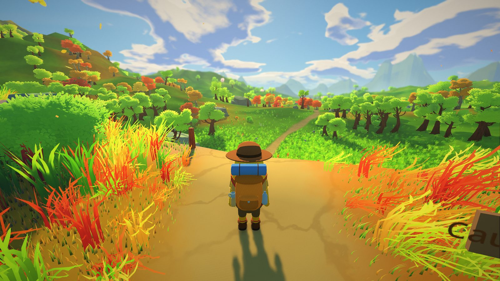

A round little hiker with noodle arms, a merit-badge sash and a backpack that is always a bit too big. Pick colors, a hat and a face. They bounce, flail and wave along with you.
It's the same editor as in the game. Your scout hikes ahead of you on the title screen, and V switches to third person on the trail.
No map. No markers. Just the trail.
∞kilometers of trail
12biomes that blend into each other
56music tracks that follow your mood
The trail
Twelve moods, one endless path
Autumn meadows melt into blossom groves, pine valleys, sunset coasts, glowing forests and deserts that go on forever. Every world grows from a seed, so type in a word and your friends get the very same trail.
Obstacles
The world poses problems. You find the answers.
There is no intended solution, only physics, your stamina and whatever is in your backpack.

1
The fallen tree
Long before you see it, the banks close in and turn to rock. Then a giant trunk lies across the lane and there is no way around it.
Crouch underneathunless your pack weighs more than 12 kg, then you get stuck
Climb overcosts stamina; over 16 kg of luggage it's simply impossible

2
The broken bridge
A wide river, a strong current and the stumps of what used to be a bridge.
Push a log across and balanceyour load acts as a lever, so lean the wrong way and you're swimming
Swimthe current drifts you downstream and everything in your pack gets wet
Knot two ropes, tie them to the posts and climb acrossa sloppy knot plus a heavy pack slowly comes loose

3
The cliff
After a long climb the trail stops at a 20 meter drop with a waterfall pool far below.
Jump into the poolthe water breaks your fall, if you hit it
Rappel downwith rope and a good knot
Take the long detoura side ramp winds down, slowly
Merit badges
What makes Fern, Fern
Listen to your body
No health bars. Hunger, thirst, cold, wet clothes and a heavy pack show in how you walk, breathe and see.
Everything has weight
Pack light and you're quick. Pack for everything and every climb hurts. Twenty items, all with a purpose.
Endless & seeded
The trail never ends. Type any word as a seed and your friends get exactly the same world.
Weather that moves
Gusts roll across the grass, leaves drift down from autumn trees, dust devils spin through the desert.
A song for every step
56 tracks shift with the biome and the moment: calm when you rest, tense on the rope, splashy in the river.
Runs on modest PCs
Low to Ultra presets and every optimization can be toggled. From a handheld to a gaming rig.
Controls
Easy to pick up
WASDwalk & look
Shiftrun
Spacejump · climb
Ctrlcrouch
Epick up · use
Tabbackpack
Rrest · sleep
Vthird person
Free download
Ready for the trail?
Unzip it and hit play, no installer needed. Share a seed with your friends and compare how far you got.